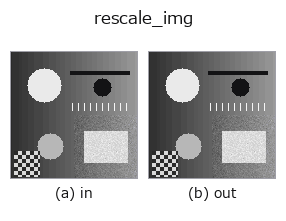

geometry op• 데이터 종류: image → image
• 호출: fullseye.apply(img, "rescale_img", a=0.5, b=0.5)(2-D 는 이미지 1 장 + 스칼라 노브 2 개 a,b∈[0,1] 모델)
• HALCON 대응: zoom_image_factor(의미·매개변수는 HALCON 레퍼런스가 참고가 됩니다)

*그림은 128×128 합성 입력에서 실제로 실행한 출력. 왼쪽이 입력, 오른쪽이 출력. 점군은 위에서 본 산점도(밝기 = z), 1-D 열은 꺾은선, 볼륨은 z 방향 최대값 투영, 동영상은 가운데 프레임, 복소 영상은 진폭이며, 그림이 되지 않는 반환값은 값 자체를 표시한다.*
노브 a 를 훑기(0.1 / 0.5 / 0.9, 다른 노브는 기본값):
▸ rescale_img: 노브 a 스윕 (문서 사이트)
노브 b 를 훑기(0.1 / 0.5 / 0.9, 다른 노브는 기본값):
▸ rescale_img: 노브 b 스윕 (문서 사이트)
다른 영상에서도(합성 장면 / 사진 / 동전. 윗줄이 입력, 아랫줄이 그 출력. 노브는 기본값):
▸ rescale_img: 다른 입력 이미지 (문서 사이트)
*4열은 컬러 (H,W,3) 입력. 이 op는 채널을 넘나들지 않고 컬러를 다룰 수 있다(색 채널을 세 번째 공간축으로 컨볼루션하지 않음).*
중심을 유지한 등방 스케일링 s = 0.7 + 0.6·a. 캔버스는 그대로.
b = 보간 차수 — (0, 1, 3, 3)[min(3, int(4b))](0 = 최근접, 1 = 쌍선형, 3 = 3차 스플라인). b=0.5는 3차이며, b가 죽어 있던 시절의기본값(ndimage의 order=3)과 비트 일치한다.
★2026-09-02: 그때까지 rescale_img / zoom_image_factor / zoom_image_size는 3개 모두 같은 구현(실측: 상호 최대 차 0.0과 4.9e-14)이었고, 3개 모두 b를 쓰지 않았다. 3개의 역할을 나눴다:
• rescale_img — 등방 배율 1개 + 보간 차수(이 함수)
• zoom_image_factor— 세로·가로 2개의 배율(HALCON의 ScaleHeight/ScaleWidth)
• zoom_image_size — 목표 크기 지정(출력 shape가 바뀐다)
HALCON 이름도 실태에 맞춰 zoom_image_size → zoom_image_factor로바꿔 달았다(이 op는 크기가 아니라 배율로 구동되므로).
• 샘플 데이터 카탈로그(DL URL / 라이선스) —— 2-D 는 skimage.data(BSD/public)+ 합성, 3-D 는 실데이터 소스(Stanford/PDS 등)의 DL URL.
• 연산자의 내력·참고문헌 —— 이 연산자 족의 바탕이 된 연구/기법의 출처.
• 알고리즘의 정전(저자·연도)과 용도는 위의 패밀리 사용 가이드에 적혀 있습니다.
아래 프로그램은 실제로 실행됨을 확인했습니다(그림과 같은 입력). Studio 도움말에서는 이 블록이 버튼이 되어 즉시 불러와 실행할 수 있습니다.
rescale_img 0.50 0.50
• gallery2d_geometry — py -3.11 examples/gallery2d_geometry.py
image 를 입력으로 받는 것)identity · gaussian · mean_box · bilateral · unsharp · median · min_filter · max_filter
geometry)rotate_img · deskew · affine_warp · sk_swirl · mirror_image · transpose_region · rotate_image · zoom_image_factor
*Provenance: ops.py — 2D 연산자 레지스트리. 이 op 노트는 tools/opdocs.py md 가 자동 생성합니다(직접 편집하지 마세요).*
© 2026 Kazufumi Furuse — Fullseye operator documentation. Licensed under Apache-2.0.